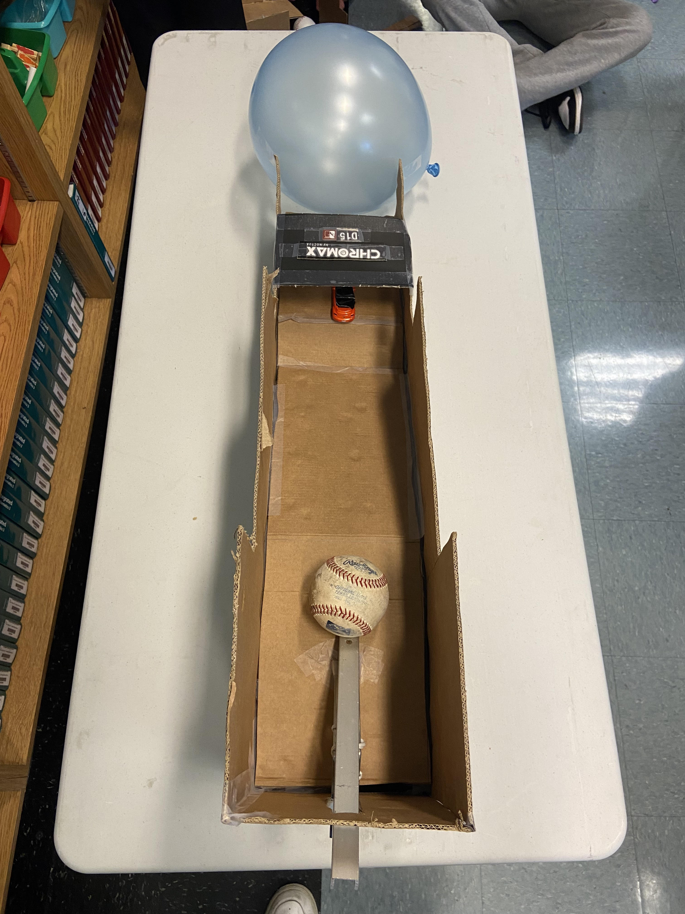
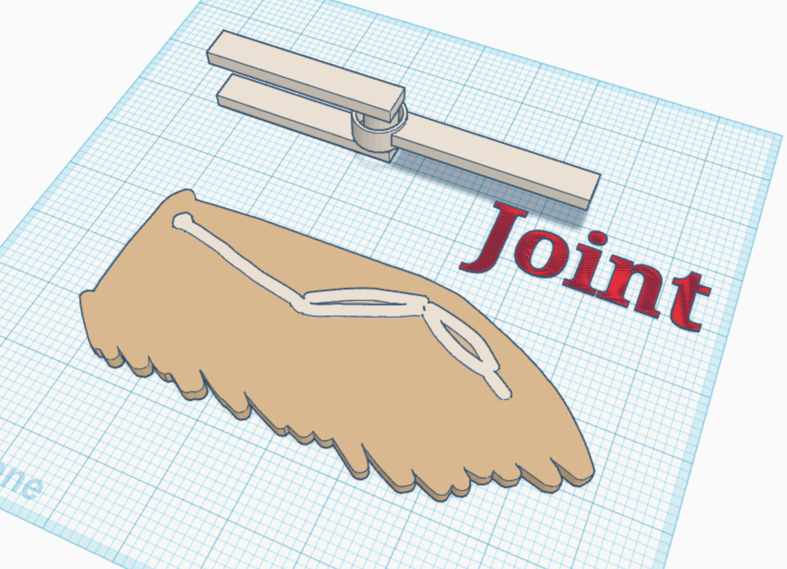
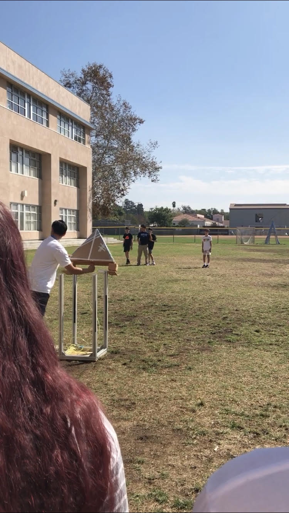
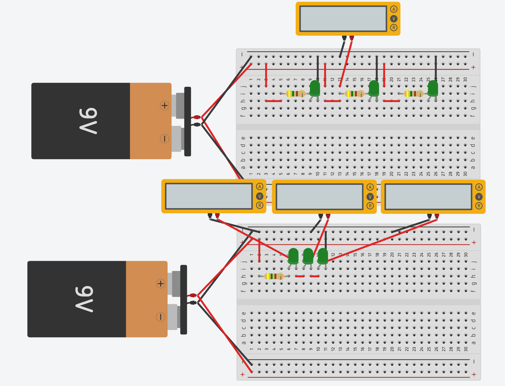
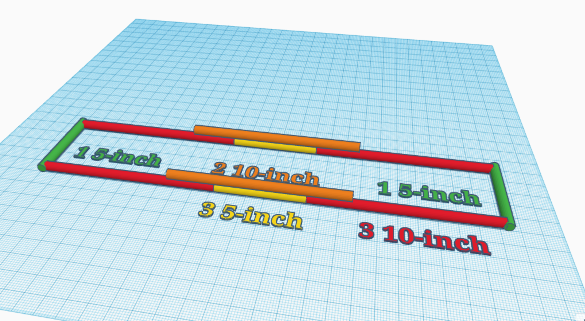
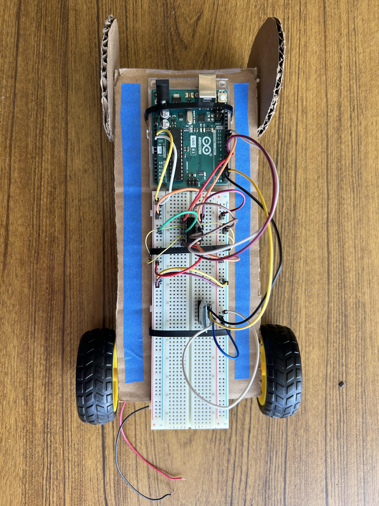

This week consisted of two tinkercad projects. The first project involved us creating a makeshift "Rube Goldberg" project, where we were required to create a mechanism where a baseball leads to popping a balloon with three of the six innovations. The second project was a challenge project where the individual had to create a tinkercad replication of a photo of an object from home. I decided to add my pup due to an extensive length of time.
Our group chose a final schematic to follow to design for our project. We decided to go with Sebastian's project which consisted of a ramp, lever, and wheel. We learned that designing an E took planning. Without it, one is unable to convey what they expect from their team. One mistake that was made was that my partner forgot part of his design. He did not add a width to his E which made the letter lack a dimension. Without this info, I was unable to create the shape because I did not know what he expected the width to be.
We created boats using an average 8.5 by 11 piece of paper. I looked up an origami boat tutorial online which seemed well due to it having more surface area on the floor. It stayed for an indefinite amount of time due to the class running out of time and requiring me to pick up the boat. Interestingly enough, a plain piece of paper that had no folds seemed to uphold well. Even with weights, it did better than more than half of the boats which were tested by other students.
Our group finished our rube goldberg project. Our first main issue was that the car with the nail went under the balloon and completely missed. We dodged this problem by making our ramp higher in order to not slide under the balloon. Also, we created a balloon shaped indent in the ramp in order for the balloon to be tapped closer to the pathway and therefore gave the car less space which it could use to dodge the balloon.
We spent both days disassembling a laptop using slides which gave us instructions as to what to do. Only issue with this assignment was the lack of knowledge which was given to us by doing this. While teachers may argue that we learned how to take apart a laptop to learn where pieces were, minimal prior information was given to us about said laptop and pieces and no person would be able to recite all ~38 steps in the process of disassembling each piece. The failing of giving the students actual photos of laptop parts like a gpu and cpu lead to the consequential unknowingness radiating from the students from being unable to tell what each piece was. Nonetheless, while I may be a visual learner and believe the slides did not teach much, I did where bigger pieces of a laptop existed since I had general knowledge on the topic.
This week us students created a prosthetic limb for an animal who had a severed body part. It took a lot of research since we had no prior knowledge as to how to create a prosthetic limb. I chose to do an eagle wing which was debatably one of the harder options to perform. Through my research, I found a German engineered material which consisted of polymer which was welded together to melt the plastics and coated with 50 nanometers thick of alumina. This created a lighter than water material which was stronger than steel. I believe that through numerous runs of trial and error (and obviously the materials), us students could have been able to make a somewhat functional limb.
A new projected was presented to us this week which was to design and create a bottle rocket. Through our research, the team decided that a bottle rocket with 3 compartments (being 3 separate bottles) attached to one another would be optimal, since it would be less prone to go off course. The problem arised with the head of the rocket. Although an elliptical top would have been more ideal for aerodynamics, a cone was our best option. We proposed that it could be possible if we made a duct tape ball and use more tape to curve the top, but it weighed down the rocket greatly. A cone did fine, I suppose.
We launched our bottle rocket this week. The 60 psi pressure entering the bottle was unable to be kept as our rocket was multiple attachments of different bottles fused with duct tape. I believe that one bottle would have worked better than what we were intending, since an intense amount of adhesive would have been required in order to achieve this goal of actually flying. Nonetheless, I am proud of the design we came up with, being a high school project and all. I learned that a perfect amount of pressure and water is needed to launch the rocket to its true distance considering that water seemed to be the downfall of most of these rockets since the rocket would not spew out the liquid fast enough and was a constant rush of pressure, letting the rocket have more time to spin. I remember in eigth grade there was no water with our bottle rocket which allowed it to fly unlike these rockets since it was only an initial burst of speed
Using tinkercad, us students created a parallel and series circuit with LED lights using a breadboard and 9V battery. We utilized formulas involving voltage, resistance, and current. I learned that a current always travels from positive to negative. I understand that teachers or students may read this without my knowledge, but I want to get out the fact that the less the teachers know about the topic they're teaching, the less the students will understand, and this lesson of electrical engineering felt, with all do respect, completely improved by teachers who had little knowledge on electrical engineering
We introduced electrical engineering this week. We learned about breadboards and that vertical columns of the board share the same voltage. This voltage can travel through resistors and such to expel an electrical current to a LED bulb.
I think the most important thing we did this week was calculate how long it would take to count to 1000000, I knew that the rate of time it took to say one number was not constant since it takes longer to say 828, for example, than 1. I'm not sure why my answer is 500 hours off because I had pretty accurate numbers and calculated the approximate area under the rectangles I created on an xy plane graph to find the total time it took to count to 1000000. I'm stubborn so I believe I'm right lol.
This week, we started designing our bridges for our final project. We had to utilize 20 spaghetti strips and wood glue to span across a 24-inch gap and also hold a bucket of water. We realized that a simple bundle of spaghetti wouldn't work, since for regular bridges, they distribute the weight across the entire platform. Attempting to recreate that, we created two bridges which had triangular connection beams (similar to the picture provided)
We did a project in which we had to present to the class a "Shark Tank" Presentation. Our idea was to create an application that would allow individuals to find local events and parties. The only flaw was the reliability of the individuals who were sending out those invites, so we decided to create a system where a user would verify if a party was legitimate or not
In class we had a project where when mixing water and corn starch, we made oobleck (essentially some slime with a small twist). The more water added, the less dense the product became. We used around a 1:2 ratio for water to corn starch. The harder and faster the oobleck moved, the faster it would solidify. However, if it was in a dormant state, then the oobleck would become liquid-like.
My team and I worked on the arduino car project. Our design consisted of an L298N motor driver with four 5V motors and an HC05 bluetooth chip. However, the materials we had to work with were the L293D motor driver, only two motors, along with the bluetooth chip. Despite these differences, we still were able to complete the project. The next paragraph consists of the things that we had learned and were challenging in the project. Overall, I believe my team did well.
I learned that it requires a lot of research when it comes to making arduino cars. The level of depth in the project was much more than I had anticipated. This is because it involves numerous levels of engineering, the hardest most likely being electrical. The most challenging part of the project was the code. There were unsolved issues with the code being uploaded to the board which even the teachers could not resolve. The code was the main stopping point in the entire project.
Our goal of the entire project, being getting the bluetooth to work, was not met. However, although we did not make it, the project was still counted as complete as we just needed to have the car run. The bluetooth was a struggle because the easy route involving an android application could not be met because my group did not have an android. There were IOS equivalents, but they required more steps to be utilized. Due to the car being able to simply run, I was proud of the work we accomplished.
My team created a boat using a hull constructed of popsicle sticks and duct tape and a sail with a straw and construction paper. This design did not work because the width of the ship was too small, which allowed the ship to rotate too much and get stuck on the gutter. If I were to change anything on the project, I would make the sail higher so that it does not interfere with the water when being blown on. Also, I would have evenly spaced out the balloons so that the ship's buoyancy was more even.
Our egg project this week had a triangular prism frame with straws. This way, no shock absorber would be needed because no impact would be on the egg. The force of hitting the ground would hit the straw which does not impact the egg whatsoever since the straws do not line up on a central point on the egg. Rather, the tension slides past the side of the egg and just onto the structure as a whole.
For our boat design, we compiled a model that would span around two desks. This would provide a good level of comfort between each person in the boat. Also, we made our walls high so that water would not seep in from the sides. We also utilized a triangular front to the boat so that it could cut through the water more swiftly.
With the drawn schematics finished, our group is now cutting the walls of the boat. Note that our drawings on the walls labeling which wall was which and what direction it should be faced was still on the boat. We are able to get around three walls done a day. The only issue with our cuts were the slight inaccuracies from blueprinting to cutting. Also, the space which we used made it not efficient in terms of the saved cardboard pieces